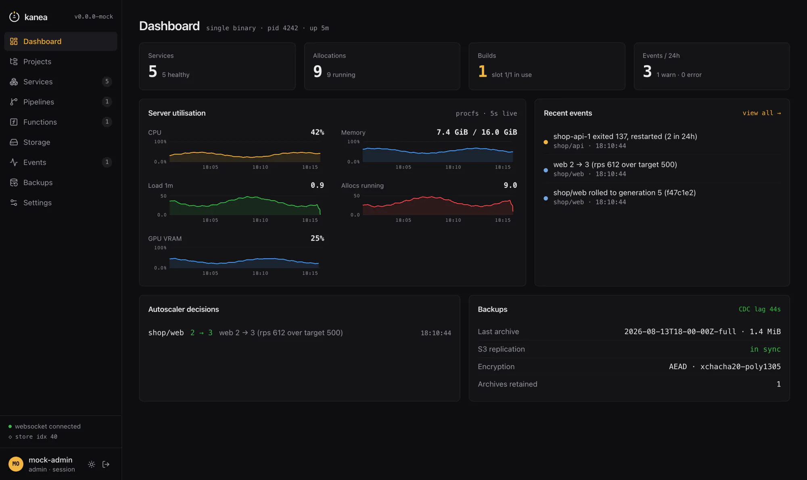

No cluster to bootstrap, no CNI to choose, no cert-manager to install, no metrics stack
to stand up first. Install, kanea init, and the dashboard on the right is already serving.
$ curl -fsSL https://m18h.github.io/kanea/install.sh | sudo bash
Piping a script into a root shell deserves a look first — read it, or install it by hand. Checksum verification is mandatory, with no flag to skip it.

The installer fetches the binary, verifies it, and stops. It generates no keys and starts nothing — those are decisions with consequences, and a script that made them for you would make them at the moment you understand the node least.
Checksum verification is mandatory. If cosign is on PATH, the Sigstore signature is verified too.
Checks the node, installs containerd, runc and rootless buildkitd at pinned versions, runs the master-key ceremony, writes the units, starts the control plane. The key is shown once.
No spec file required to start. kanea ui opens the dashboard the daemon already serves.
That is the whole list. The runtime is installed by kanea init at pinned versions — Kanea supplies it, not you.
kanea plan validates specs with file-and-line diagnostics, no daemon needed.
Three processes from one file. The edge is deliberately not a child of the control plane —
restarting kanead never drops a request in flight. Pick a piece.
{{ activeBody }}
HCL — familiar if you have written Nomad job files. Change the spec and watch the platform it produces change with it.
Eight things you would otherwise assemble, already inside.
{{ s.body }}
Not a screenshot of a plan — this is kanea ui on a running node, over one
multiplexed websocket. Pick a page.
Kanea is a single-node platform for people who wanted a platform, not a cluster. That is a trade, and this is the trade.
Multi-node scheduling is not what Kanea is for. If you need a cluster, the table already told you which column to read.
“Kanea was specified before it was written, and the document is still the north star.”